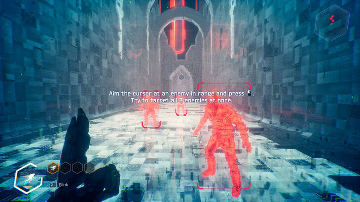

Активные способности
Обзор системы способностей
В Ghostrunner Джек обладает набором активных способностей, которые можно активировать в бою. Каждая способность требует стратегического использования в бою. По мере прохождения игры открываются новые навыки и улучшаются существующие.
Способности можно комбинировать друг с другом для создания смертоносных цепочек атак.
Базовые способности
Сверх рефлекс
Описание: Замедляет течение времени, позволяя игроку планировать свои действия и реагировать на угрозы с повышенной точностью.
Длительность: 3 секунды
Улучшения: Увеличение длительности, уменьшение перезарядки
Крюк-кошка
Описание: Выстреливает крюк, притягивающий Джека к указанной точке. Позволяет быстро сокращать дистанцию и совершать молниеносные атаки.
Тактическое применение: Мгновенное сближение с врагом для ближней атаки, быстрый подъём на высоту, уклонение от наземных атак.
Отражение снарядов
Описание: Удар по снарядам врагов, отражающий их обратно во врагов. Превращает оружие противника в его же гибель.
Улучшения: Увеличение эффективности
Тактическое применение: Используйте против снайперов и врагов с дальнобойным оружием. Отражённые снаряды убивают врагов с одного попадания.
Спец способности
Скачок

Игрок переходит в режим прицеливания с замедлением времени, выделяет нескольких врагов на одной линии и совершает сквозной телепортирующий удар, мгновенно разрубая все цели на пути.
Шквал

Мощный телекинетический импульс из руки, который отбрасывает врагов назад, сбивает их с платформ и способен отражать летящие снаряды. С улучшением на возврат энергии при убийстве двух и более противников считается одним из самых эффективных навыков в игре.
Всплеск

Выпускает горизонтальную энергетическую волну из катаны, которая летит по прямой и разрезает всех противников на дистанции.
Повелитель

Взламывает разум выбранного противника, заставляя его временно перейти на сторону Игрока и атаковать своих союзников.